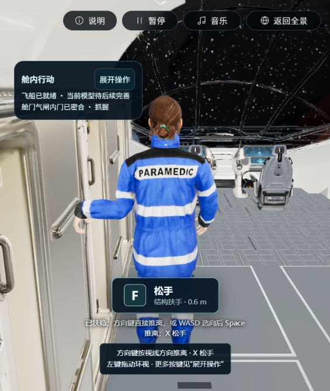
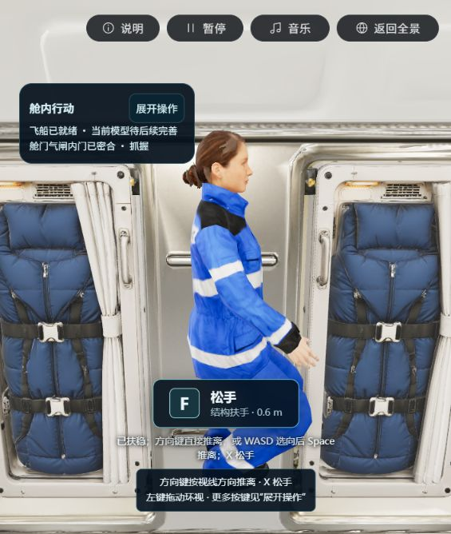
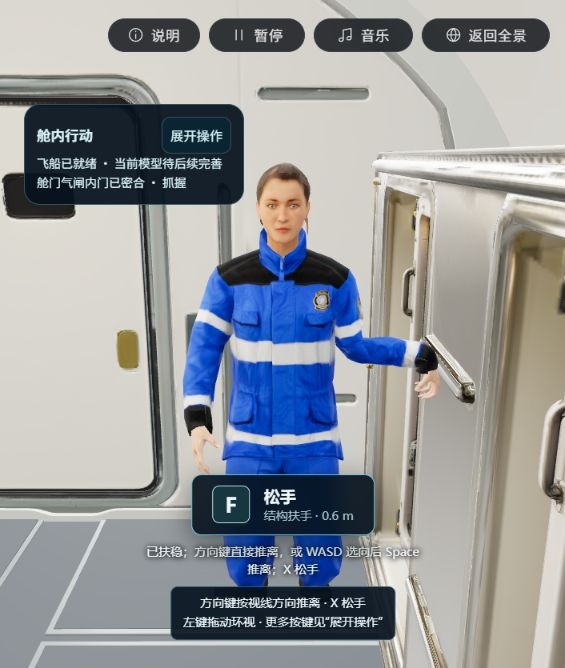
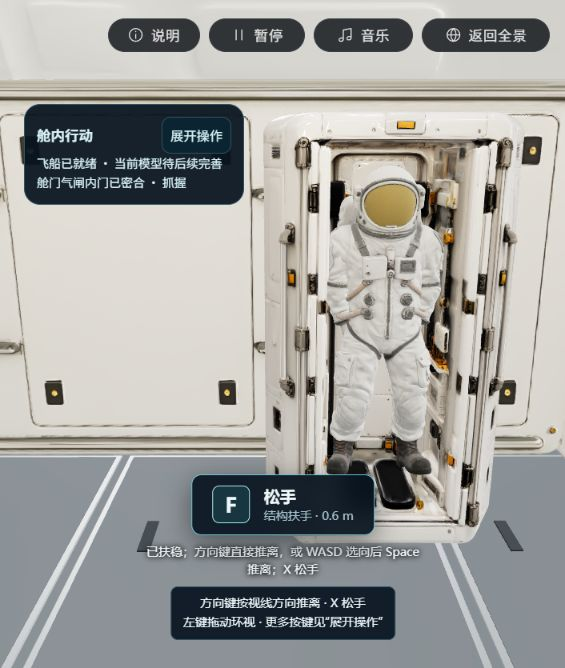
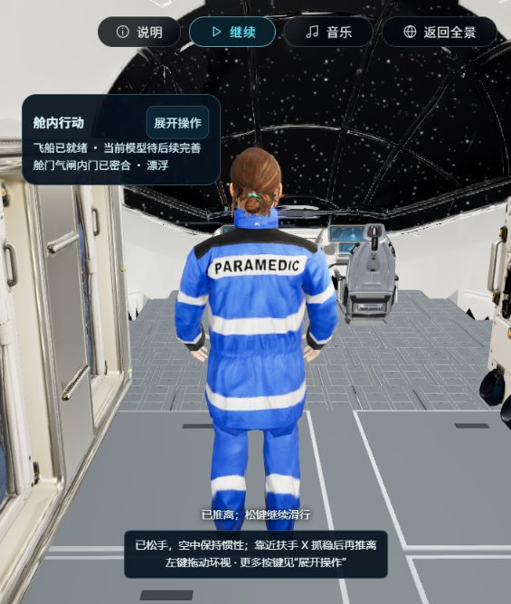
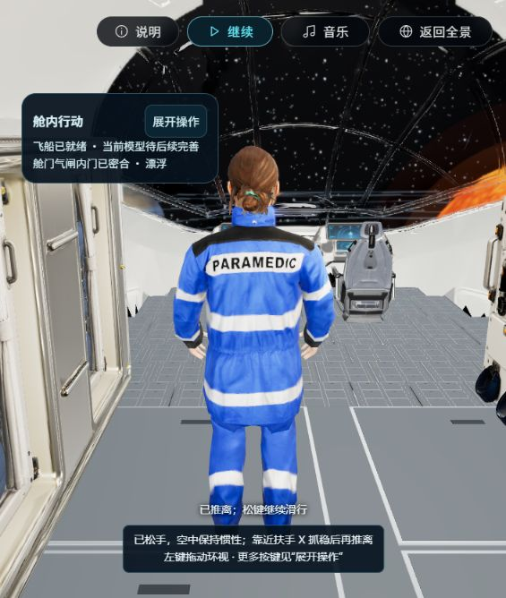
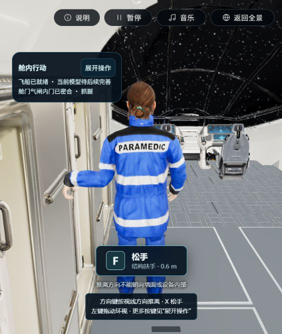
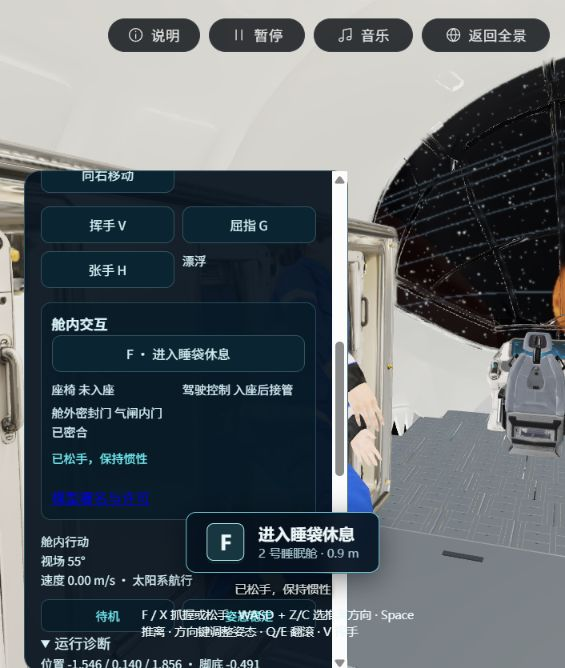

P3-R01 · 2026-10-28 · 桌面 Web 实际主场景
方向键直接推离，鼠标可水平环视一整圈
本轮修复输入映射、普通漂浮的相机限位和操作按钮后的键盘焦点。保留真实扶手接触、空中惯性、设备约束及源面碰撞；人物、船壳和设备模型未修改。以下均为实际游戏截图，未调整人物比例或隐藏设备来取得效果。
进入主场景 · 检查记录 · 8份保护原件哈希
现在怎样操作
| 操作 | 实际行为 |
|---|
| ↑ ↓ ← → | 抓稳后按观察方向直接推离，无需再按Space；朝墙或设备内部会明确拒绝。 |
| 鼠标左键拖动 | 普通漂浮/抓握时水平360°环视；遇船壳或设备镜头会自动拉近，极近时原有遮挡处理可能隐藏人物。实际睡袋对位/休息仍保留保护机位。 |
| X / F | X抓握或松手；F执行当前附近设备提示。离手后保持惯性，需要再次靠近扶手抓稳才能推离；无接触、零速度时不能凭空加速。 |
| Shift + 方向键 | 扶稳时调整身体姿态；原方向键姿态功能迁到这一组合。WASD与Z/C选向、Space推离的旧方式保留。 |
| 展开/收起操作、暂停/继续之后 | 舱内控制按钮保留焦点时，下一次移动键自动交回画布；输入框、下拉菜单与普通按钮的Space操作保持正常。 |
环视实景：同一扶手、人物位置未动

0°：驾驶区。原扶手contact保持，位置约(-1.546,0.140,1.856)米。
约90°：睡眠舱侧。人物没有随镜头转向或平移。
约180°：人物正面与后舱门。
约270°：过去受限的另一侧，可见宇航服柜。相机距目标更近，原遮挡规则使人物不显示；源面碰撞保持。四次实际左键拖动，读取水平角约0、1.570、3.140、-1.573、-0.003弧度，完成约359.8°连续环绕。相机相对目标横向偏移从+2.049米到-0.470米，已跨越旧规则限制的半区。抓握ID始终相同，人物根位置保持。原始只读观测
方向键实际移动与焦点复验

仅按右方向键，未按Space：从x=-1.54585米移动至约-0.75727米，约78.9厘米；实际速度约0.52m/s。截图在操作结束后暂停取得，不将按键持续时间等同于全部滑行时间。
焦点专门复验：展开→收起，焦点仍为BUTTON；不点击画布直接按右方向键，焦点变为CANVAS，人物移动约45.0厘米、速度0.52m/s。此为一次独立重启后的来源操作，未冒称与前述操作连续。方向键实读状态 · 按钮到画布的焦点与位移

朝墙推离被真实约束拒绝，现在直接说明原因；未改小碰撞体或提高穿透容差。
保留的修复前现场与失败

用户现场：无contact，线速度为0，仍有角速度；旧方向键只调整身体，在空中也不产生线推进。按键前后只读状态首轮定向回归5过1败：旧测试在睡袋退出已经结束后，仍要求所有自由环绕角度都显示人物。现保留真实对位/休息/退出进行中的可见性断言；完成退出后检查相机数值有效，并新增原来源24角度、两侧位置与相机不改变身体的检查。失败日志保留在本机缓存，没有删除测试换取通过。
工程结果与边界
最终输入焦点修改后重新运行：340项测试全部通过、0失败，3套件，114.7479658秒；类型检查通过，生产构建通过12.07秒，保留既有大chunk提示。8份保护原件字节/哈希保持。运行控制器376行、输入映射22行、主面板89行、运行Hook156行。新映射覆盖观察方向与身体方向不同、相反按键、暂停/穿脱门禁、无支撑惯性和设备约束；原来源回归覆盖实际初始抓握、纯方向键推离、24个相机水平角，以及原睡袋与实验往返。
独立生产预览端口的进程未保持监听；尝试通过现有服务器静态装载生产包也因资产根路径不匹配失败，未冒称生产浏览器交互通过。本轮截图与键盘/鼠标验证来自实际开发主场景；生产编译结果另记。未部署或发布。未验证目标设备长时性能、所有设备无指导可用性或完整EVA；整船视觉仍待用户确认。